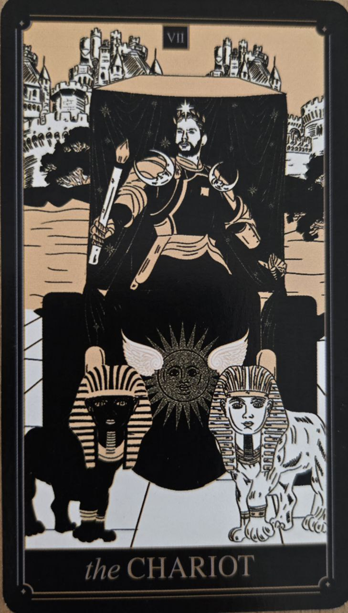

Voz predstavuje pohyb, ambície a schopnosť smerovať k cieľu napriek prekážkam. Po období rozhodovania a hľadania smeru prichádza karta, ktorá symbolizuje akciu a odhodlanie.
Je spojená s energiou človeka, ktorý už pozná svoj cieľ a je pripravený vynaložiť úsilie na jeho dosiahnutie.
Voz symbolizuje disciplínu, sebadôveru a schopnosť prevziať kontrolu nad vlastnou cestou. Hovorí o období napredovania, vytrvalosti a aktívneho riešenia problémov.
Táto karta pripomína, že úspech neprichádza náhodou, ale prostredníctvom sústredeného úsilia.
Na karte býva postava voza vedeného dvoma zvieratami alebo bytosťami, ktoré často predstavujú protichodné sily.
Úlohou vodiča nie je tieto sily odstrániť, ale naučiť sa ich koordinovať a usmerňovať správnym smerom.
Voz nie je symbolom bezhlavého pohybu. Ukazuje, že skutočný pokrok si vyžaduje nielen energiu, ale aj jasný smer.